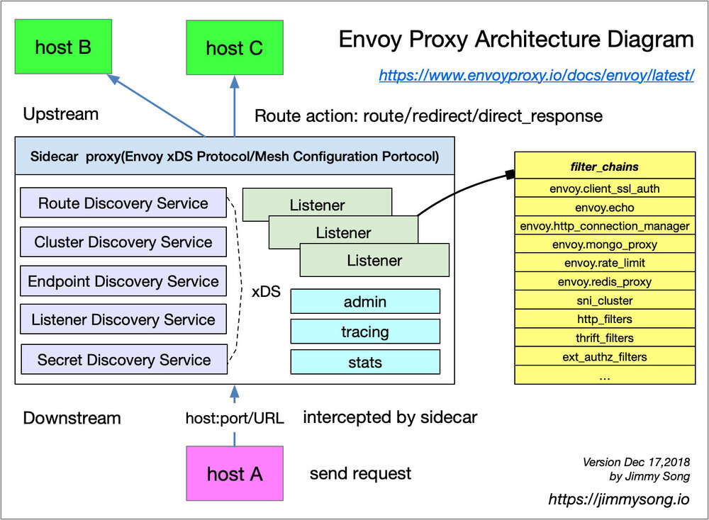

Envoy 是 Istio Service Mesh 中默认的 Sidecar，Istio 在 Enovy 的基础上按照 Envoy 的 xDS 协议扩展了其控制平面，在讲到 Envoy xDS 协议之前还需要我们先熟悉下 Envoy 的基本术语。下面列举了 Envoy 里的基本术语及其数据结构解析，关于 Envoy 的详细介绍请参考 Envoy 官方文档，至于 Envoy 在 Service Mesh（不仅限于 Istio） 中是如何作为转发代理工作的请参考网易云刘超的这篇深入解读 Service Mesh 背后的技术细节 以及理解 Istio Service Mesh 中 Envoy 代理 Sidecar 注入及流量劫持，本文引用其中的一些观点，详细内容不再赘述。

基本术语
下面是您应该了解的 Enovy 里的基本术语：
- Downstream（下游）：下游主机连接到 Envoy，发送请求并接收响应，即发送请求的主机。
- Upstream（上游）：上游主机接收来自 Envoy 的连接和请求，并返回响应，即接受请求的主机。
- Listener（监听器）：监听器是命名网地址（例如，端口、unix domain socket 等)，下游客户端可以连接这些监听器。Envoy 暴露一个或者多个监听器给下游主机连接。
- Cluster（集群）：集群是指 Envoy 连接的一组逻辑相同的上游主机。Envoy 通过服务发现来发现集群的成员。可以选择通过主动健康检查来确定集群成员的健康状态。Envoy 通过负载均衡策略决定将请求路由到集群的哪个成员。
我将在本文的后半部分解释以上术语与 Kubernetes、Istio 中概念之间的联系。
关于 xDS 的版本
有一点需要大家注意，就是 Envoy 的 API 有 v1 和 v2 两个版本，从 Envoy 1.5.0 起 v2 API 就已经生产就绪了，为了能够让用户顺利的向 v2 版本的额 API 过度，Envoy 启动的时候设置了一个 --v2-config-only 的标志，Enovy 不同版本对 v1/v2 API 的支持详情请参考 Envoy v1 配置废弃时间表。
Envoy 的作者 Matt Klein 在 Service Mesh 中的通用数据平面 API 设计这篇文章中说明了 Envoy API v1 的历史及其缺点，还有 v2 的引入。v2 API 是 v1 的演进，而不是革命，它是 v1 功能的超集。
在 Istio 1.0 及以上版本中使用的是 Envoy 1.8.0-dev 版本，其支持 v2 的 API，同时在 Envoy 作为 Sidecar proxy 启动的使用使用了例如下面的命令：
$ /usr/local/bin/envoy -c /etc/istio/proxy/envoy-rev0.json --restart-epoch 0 --drain-time-s 45 --parent-shutdown-time-s 60 --service-cluster ratings --service-node sidecar~172.33.14.2~ratings-v1-8558d4458d-ld8x9.default~default.svc.cluster.local --max-obj-name-len 189 --allow-unknown-fields -l warn --v2-config-only
上面是都 Bookinfo 示例中的 rating pod 中的 sidecar 启动的分析，可以看到其中指定了 --v2-config-only，表明 Istio 1.0+ 只支持 xDS v2 的 API。
Istio sidecar proxy 配置
假如您使用 kubernetes-vagrant-centos-cluster 部署了 Kubernetes 集群并开启了 Istio Service Mesh，再部署 bookinfo 示例，那么在 default 命名空间下有一个名字类似于 ratings-v1-7c9949d479-dwkr4 的 Pod，使用下面的命令查看该 Pod 的 Envoy sidecar 的全量配置：
kubectl -n default exec ratings-v1-7c9949d479-dwkr4 -c istio-proxy curl http://localhost:15000/config_dump > dump-rating.json
将 Envoy 的运行时配置 dump 出来之后你将看到一个长 6000 余行的配置文件。关于该配置文件的介绍请参考 Envoy v2 API 概览。
Istio 会在为 Service Mesh 中的每个 Pod 注入 Sidecar 的时候同时为 Envoy 注入 Bootstrap 配置，其余的配置是通过 Pilot 下发的，注意整个数据平面即 Service Mesh 中的 Envoy 的动态配置应该是相同的。您也可以使用上面的命令检查其他 sidecar 的 Envoy 配置是否跟最上面的那个相同。
使用下面的命令检查 Service Mesh 中的所有有 Sidecar 注入的 Pod 中的 proxy 配置是否同步。
$ istioctl proxy-status
PROXY CDS LDS EDS RDS PILOT VERSION
details-v1-876bf485f-sx7df.default SYNCED SYNCED SYNCED (100%) SYNCED istio-pilot-5bf6d97f79-6lz4x 1.0.0
...
istioctl 这个命令行工具就像 kubectl 一样有很多神器的魔法，通过它可以高效的管理 Istio 和 debug。
Envoy proxy 配置解析
Istio envoy sidecar proxy 配置中包含以下四个部分。
- bootstrap：Envoy proxy 启动时候加载的静态配置。
- listeners：监听器配置，使用 LDS 下发。
- clusters：集群配置，静态配置中包括 xds-grpc 和 zipkin 地址，动态配置使用 CDS 下发。
- routes：路由配置，静态配置中包括了本地监听的服务的集群信息，其中引用了 cluster，动态配置使用 RDS 下发。
每个部分中都包含静态配置与动态配置，其中 bootstrap 配置又是在集群启动的时候通过 sidecar 启动参数注入的，配置文件在 /etc/istio/proxy/envoy-rev0.json。
Enovy 的配置 dump 出来后的结构如下图所示。
由于 bootstrap 中的配置是来自 Envoy 启动时加载的静态文件，主要配置了节点信息、tracing、admin 和统计信息收集等信息，这不是本文的重点，大家可以自行研究。
上图是 bootstrap 的配置信息。
Bootstrap 是 Envoy 中配置的根本来源，Bootstrap 消息中有一个关键的概念，就是静态和动态资源的之间的区别。例如 Listener 或 Cluster 这些资源既可以从 static_resources 静态的获得也可以从 dynamic_resources 中配置的 LDS 或 CDS 之类的 xDS 服务获取。
Listener
Listener 顾名思义，就是监听器，监听 IP 地址和端口，然后根据策略转发。
Listener 的特点
- 每个 Envoy 进程中可以有多个 Listener，Envoy 与 Listener 之间是一对多的关系。
- 每个 Listener 中可以配置一条 filter 链表（filter_chains），Envoy 会根据 filter 顺序执行过滤。
- Listener 可以监听下游的端口，也可以接收来自其他 listener 的数据，形成链式处理。
- filter 是可扩展的。
- 可以静态配置，也可以使用 LDS 动态配置。
- 目前只能监听 TCP，UDP 还未支持。
Listener 的数据结构
Listener 的数据结构如下，除了 name、address 和 filter_chains 为必须配置之外，其他都为可选的。
{
"name": "...",
"address": "{...}",
"filter_chains": [],
"use_original_dst": "{...}",
"per_connection_buffer_limit_bytes": "{...}",
"metadata": "{...}",
"drain_type": "...",
"listener_filters": [],
"transparent": "{...}",
"freebind": "{...}",
"socket_options": [],
"tcp_fast_open_queue_length": "{...}",
"bugfix_reverse_write_filter_order": "{...}"
}
下面是关于上述数据结构中的常用配置解析。
-
name：该 listener 的 UUID，唯一限定名，默认60个字符，例如
10.254.74.159_15011，可以使用命令参数指定长度限制。 -
address：监听的逻辑/物理地址和端口号，例如
"address": { "socket_address": { "address": "10.254.74.159", "port_value": 15011 } } -
filter_chains：这是一个列表，Envoy 中内置了一些通用的 filter，每种 filter 都有特定的数据结构，Enovy 会根据该配置顺序执行 filter。Envoy 中内置的 filter 有：envoy.client_ssl_auth、envoy.echo、enovy.http_connection_manager、envoy.mongo_proxy、envoy.rate_limit、enovy.redis_proxy、envoy.tcp_proxy、http_filters、thrift_filters等。这些 filter 可以单独使用也可以组合使用，还可以自定义扩展，例如使用 Istio 中的 EnvoyFilter 配置。
-
use_original_dst：这是一个布尔值，如果使用 iptables 重定向连接，则代理接收的端口可能与原始目的地址的端口不一样。当此标志设置为 true 时，Listener 将重定向的连接切换到与原始目的地址关联的 Listener。如果没有与原始目的地址关联的 Listener，则连接由接收它的 Listener 处理。默认为 false。注意：该参数将被废弃，请使用原始目的地址的 Listener filter 替代。该参数的主要用途是：Envoy 通过监听 15001 端口将应用的流量截取后再由其他 Listener 处理而不是直接转发出去，详情见 Virtual Listener。
关于 Listener 的详细介绍请参考 Envoy v2 API reference - listener。
Route
我们在这里所说的路由指的是 HTTP 路由，这也使得 Envoy 可以用来处理网格边缘的流量。HTTP 路由转发是通过路由过滤器实现的。该过滤器的主要职能就是执行路由表中的指令。除了可以做重定向和转发，路由过滤器还需要处理重试、统计之类的任务。
HTTP 路由的特点
Route 的数据结构
{
"name": "...",
"virtual_hosts": [],
"internal_only_headers": [],
"response_headers_to_add": [],
"response_headers_to_remove": [],
"request_headers_to_add": [],
"request_headers_to_remove": [],
"validate_clusters": "{...}"
}
下面是关于上述数据结构中的常用配置解析。
- name：该名字跟
envoy.http_connection_managerfilter 中的http_filters.rds.route_config_name一致，在 Istio Service Mesh 中为 Envoy 下发的配置中的 Route 是以监听的端口号作为名字，而同一个名字下面的virtual_hosts可以有多个值（数组形式）。 - virtual_hosts：因为 VirtualHosts 是 Envoy 中引入的一个重要概念，我们在下文将详细说明
virtual_hosts的数据结构。 - validate_clusters：这是一个布尔值，用来设置开启使用 cluster manager 来检测路由表引用的 cluster 是否有效。如果是路由表是通过 route_config 静态配置的则该值默认设置为 true，如果是使用 rds 动态配置的话，则该值默认设置为 false。
关于 Route 的详细介绍请参考 Envoy v2 API reference - HTTP route configuration。
route.VirtualHost
VirtualHost 即上文中 Route 配置中的 virtual_hosts，VirtualHost 是路由配置中的顶级元素。每个虚拟主机都有一个逻辑名称以及一组根据传入请求的 host header 路由到它的域。这允许单个 Listener 为多个顶级域路径树提供服务。基于域选择了虚拟主机后 Envoy 就会处理路由以查看要路由到哪个上游集群或是否执行重定向。
VirtualHost 的数据结构
下面是 VirtualHost 的数据结构，除了 name 和 domains 是必须配置项外，其他皆为可选项。
{
"name": "...",
"domains": [],
"routes": [],
"require_tls": "...",
"virtual_clusters": [],
"rate_limits": [],
"request_headers_to_add": [],
"request_headers_to_remove": [],
"response_headers_to_add": [],
"response_headers_to_remove": [],
"cors": "{...}",
"per_filter_config": "{...}",
"include_request_attempt_count": "..."
}
下面是关于上述数据结构中的常用配置解析。
- name：该 VirtualHost 的名字，一般是 FQDN 加端口，如
details.default.svc.cluster.local:9080。 - domains：这是个用来匹配 VirtualHost 的域名（host/authority header）列表，也可以使用通配符，但是通配符不能匹配空字符，除了仅使用
*作为 domains，注意列表中的值不能重复和存在交集，只要有一条 domain 被匹配上了，就会执行路由。Istio 会为该值配置所有地址解析形式，包括 IP 地址、FQDN 和短域名等。 - routes：针对入口流量的有序路由列表，第一个匹配上的路由将被执行。我们在下文将详细说明 route 的数据结构。
下面是一个实际的 VirtualHost 的例子，该配置来自 Bookinfo 应用的 details 应用的 Sidecar 服务。
{
"name": "details.default.svc.cluster.local:9080",
"domains": [
"details.default.svc.cluster.local",
"details.default.svc.cluster.local:9080",
"details",
"details:9080",
"details.default.svc.cluster",
"details.default.svc.cluster:9080",
"details.default.svc",
"details.default.svc:9080",
"details.default",
"details.default:9080",
"10.254.4.113",
"10.254.4.113:9080"
],
"routes": [
{
"match": {
"prefix": "/"
},
"route": {
"cluster": "outbound|9080||details.default.svc.cluster.local",
"timeout": "0s",
"max_grpc_timeout": "0s"
},
"decorator": {
"operation": "details.default.svc.cluster.local:9080/*"
},
"per_filter_config": {
"mixer": {
"forward_attributes": {
"attributes": {
"destination.service.uid": {
"string_value": "istio://default/services/details"
},
"destination.service.host": {
"string_value": "details.default.svc.cluster.local"
},
"destination.service.namespace": {
"string_value": "default"
},
"destination.service.name": {
"string_value": "details"
},
"destination.service": {
"string_value": "details.default.svc.cluster.local"
}
}
},
"mixer_attributes": {
"attributes": {
"destination.service.host": {
"string_value": "details.default.svc.cluster.local"
},
"destination.service.uid": {
"string_value": "istio://default/services/details"
},
"destination.service.name": {
"string_value": "details"
},
"destination.service.namespace": {
"string_value": "default"
},
"destination.service": {
"string_value": "details.default.svc.cluster.local"
}
}
},
"disable_check_calls": true
}
}
}
]
}
关于 route.VirtualHost 的详细介绍请参考 Envoy v2 API reference - route.VirtualHost。
route.Route
路由既是如何匹配请求的规范，也是对下一步做什么的指示（例如，redirect、forward、rewrite等）。
route.Route 的数据结构
下面是是 route.Route 的数据结构，除了 match 之外其余都是可选的。
{
"match": "{...}",
"route": "{...}",
"redirect": "{...}",
"direct_response": "{...}",
"metadata": "{...}",
"decorator": "{...}",
"per_filter_config": "{...}",
"request_headers_to_add": [],
"request_headers_to_remove": [],
"response_headers_to_add": [],
"response_headers_to_remove": []
}
下面是关于上述数据结构中的常用配置解析。
- match：路由匹配参数。例如 URL prefix（前缀）、path（URL 的完整路径）、regex（规则表达式）等。
- route：这里面配置路由的行为，可以是 route、redirect 和 direct_response，不过这里面没有专门的一个配置项用来配置以上三种行为，而是根据实际填充的配置项来确定的。例如在此处添加
cluster配置则暗示路由动作为”route“，表示将流量路由到该 cluster。详情请参考 route.RouteAction。 - decorator：被匹配的路由的修饰符，表示被匹配的虚拟主机和 URL。该配置里有且只有一个必须配置的项
operation，例如details.default.svc.cluster.local:9080/*。 - per_filter_config：这是一个 map 类型，
per_filter_config字段可用于为 filter 提供特定路由的配置。Map 的 key 应与 filleter 名称匹配，例如用于 HTTP buffer filter 的envoy.buffer。该字段是特定于 filter 的，详情请参考 HTTP filter。
关于 route.Route 的详细介绍请参考 Envoy v2 API reference - route.Route。
Cluster
Cluster 是指 Envoy 连接的一组逻辑相同的上游主机。Envoy 通过服务发现来发现 cluster 的成员。可以选择通过主动健康检查来确定集群成员的健康状态。Envoy 通过负载均衡策略决定将请求路由到 cluster 的哪个成员。
Cluster 的特点
- 一组逻辑上相同的主机构成一个 cluster。
- 可以在 cluster 中定义各种负载均衡策略。
- 新加入的 cluster 需要一个热身的过程才可以给路由引用，该过程是原子的，即在 cluster 热身之前对于 Envoy 及 Service Mesh 的其余部分来说是不可见的。
- 可以通过多种方式来配置 cluster，例如静态类型、严格限定 DNS、逻辑 DNS、EDS 等。
Cluster 的数据结构
Cluster 的数据结构如下，除了 name 字段，其他都是可选的。
{
"name": "...",
"alt_stat_name": "...",
"type": "...",
"eds_cluster_config": "{...}",
"connect_timeout": "{...}",
"per_connection_buffer_limit_bytes": "{...}",
"lb_policy": "...",
"hosts": [],
"load_assignment": "{...}",
"health_checks": [],
"max_requests_per_connection": "{...}",
"circuit_breakers": "{...}",
"tls_context": "{...}",
"common_http_protocol_options": "{...}",
"http_protocol_options": "{...}",
"http2_protocol_options": "{...}",
"extension_protocol_options": "{...}",
"dns_refresh_rate": "{...}",
"dns_lookup_family": "...",
"dns_resolvers": [],
"outlier_detection": "{...}",
"cleanup_interval": "{...}",
"upstream_bind_config": "{...}",
"lb_subset_config": "{...}",
"ring_hash_lb_config": "{...}",
"original_dst_lb_config": "{...}",
"least_request_lb_config": "{...}",
"common_lb_config": "{...}",
"transport_socket": "{...}",
"metadata": "{...}",
"protocol_selection": "...",
"upstream_connection_options": "{...}",
"close_connections_on_host_health_failure": "...",
"drain_connections_on_host_removal": "..."
}
下面是关于上述数据结构中的常用配置解析。
- name：如果你留意到作为 Sidecar 启动的 Envoy 的参数的会注意到
--max-obj-name-len 189，该选项用来用来指定 cluster 的名字，例如inbound|9080||ratings.default.svc.cluster.local。该名字字符串由|分隔成四个部分，分别是inbound或outbound代表入向流量或出向流量、端口号、subcluster 名称、FQDN，其中 subcluster 名称将对应于 IstioDestinationRule中配置的subnet，如果是按照多版本按比例路由的话，该值可以是版本号。 - type：即服务发现类型，支持的参数有
STATIC（缺省值）、STRICT_DNS、LOGICAL_DNS、EDS、ORIGINAL_DST。 - hosts：这是个列表，配置负载均衡的 IP 地址和端口，只有使用了
STATIC、STRICT_DNS、LOGICAL_DNS服务发现类型时才需要配置。 - eds_cluster_config：如果使用
EDS做服务发现，则需要配置该项目，其中包括的配置有service_name和ads。
关于 Cluster 的详细介绍请参考 Envoy v2 API reference - cluster。